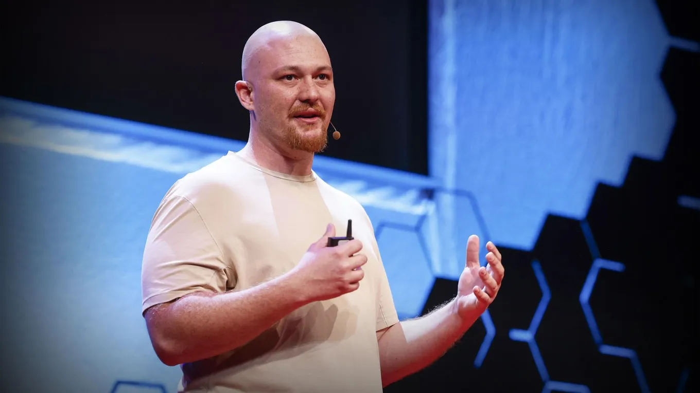

How Replit grew from a side project to $1.16 billion
Originally posted on LinkedIn, January 10, 2025.
Amjad Masad grew up in Jordan, was rejected by Y Combinator four times, and turned his side project into Replit, now worth $1.16 billion.
Learning to code in an internet cafe
Masad learned to program in an internet cafe in Jordan. “Every time I wanted to write a line of code, I had to set up the development environment again from scratch. It was incredibly frustrating,” he said.
That experience led him to a simple question: Why couldn’t people write and run code directly in the browser?
After years of teaching himself and building his skills, Masad joined Facebook. He worked on internal developer tools and learned how to build technology that helped developers work more efficiently.
“I worked on projects that helped developers be more productive, and it made me think: Why not do this for everyone, not just Facebook developers?”
He kept building Replit as a side project while working at Facebook. Eventually, it became too large to remain a hobby.
“I reached the point where server costs were growing, and I realized I had no choice but to turn it into a real company.”
Masad sold some of his Facebook shares and used the money to fund Replit’s first stage.
Four YC rejections
Masad applied to Y Combinator four times and was rejected each time.
“It was hard to receive so many rejections, but instead of giving up, I realized the idea was worth the effort. I just didn’t quit.”
On his fifth attempt, he sent YC a Replit demo they could not ignore. It let them run code in real time inside the email itself.
“They weren’t sure about me, so I decided to send them a demo they couldn’t ignore. It was a Replit demo where you could run code, in real time, inside the email itself. They said, ‘Okay, this is crazy. We’re in.’”
What Replit does
Replit lets anyone write and run code directly in a browser without installing software or configuring a development environment:
- Choose from a wide range of programming languages.
- Write code in a simple workspace.
- Run it in the cloud and get immediate results.
That makes Replit useful for both beginners and professional developers.
Building software with AI
Masad says AI has changed what people can build on the platform and how much it costs.
“We’re seeing people create complex applications for less than $100, something that used to take months and cost tens of thousands of dollars.”
Replit now lets people create software even without programming experience. As Masad put it, “This is the future of software development. Ideas and creativity matter more than code.”
